说明：离线任务-熔断配置
一、背景
当前熔断能力只覆盖了实时、近线，但很多用户是实近离一起使用的，多引擎没有进行功能拉齐，因此对离线任务的熔断提出诉求，整体把控风险。
功能效果：当离线任务-决策、离线任务-规则-决策、离线任务-决策组合命中情况产生异常，达到预设的熔断阈值时，将该批次执行结果进行自动阻断，不发送到下游，以此规避风险；使用者可对熔断数据进行分析，如果符合预期，可以一键继续下方，无需重跑任务。
二、名词解释
|
名词 |
解释 |
|---|---|
|
离线任务 |
数据源为离线hive，用于批量回捞历史风险，由数据源、数据范围（周期、where条件）、任务调度、执行场景/规则组成 |
|
批次 |
离线任务每运行一次产生一个批次，用于区分不同运行周期产生的数据，每个批次独立进行计算熔断阈值，不进行累计；如每小时运行一次，一天则会产生24个批次 |
三、操作指南
3.1系统流程
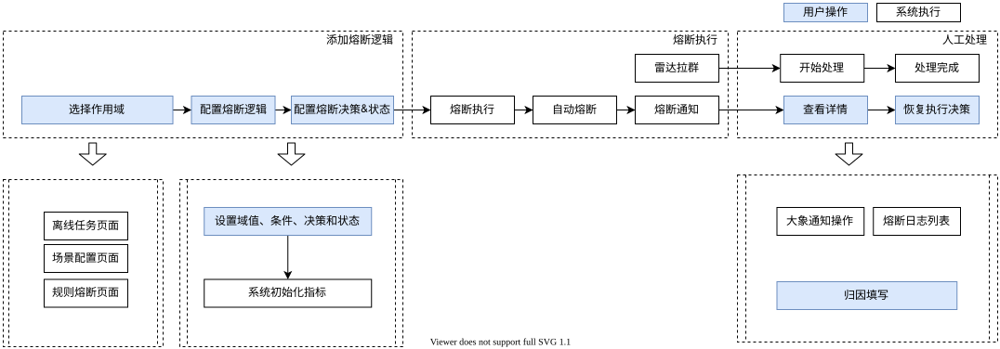
3.2详细步骤
因任务熔断默认使用【自动熔断】，请务必及时处理，否则将会不断升级
-
使用自动熔断前，请先找到组织架构对应的SRE同学帮忙根据事件通知策略配置配置电话通知，否则电话通知将不可生效！
- 告警电话呼出号码可能被手机识别成骚扰电话。建议将以下号码加白或加入通讯录：051480311605、051480311606、051485590912、051485590914、02151657926、02151657936、02151657940、02151657942
-
当前平台已默认配置以下通知策略
平台已有通知策略，若以下升级策略不符合本组织架构诉求，可联系组织架构对应SRE同学帮忙配置。
1）“美团/基础研发平台/信息安全部/风控和业务安全”架构下，需要事件在开始2分钟之后没有人响应的话，电话告警事件发起人，期间仍未响应，电话将连续打5次；再20分钟之后仍无人响应的话再次电话告警事件发起人X1，并拉事件发起人X1入群。
2）“美团/基础研发平台/信息安全部/风控和业务安全/点评风控”架构下，需要事件在开始2分钟之后没有人响应的话，电话告警事件发起人，期间仍未响应，电话将连续打5次；再20分钟之后仍无人响应的话再次电话告警事件发起人X1，并拉事件发起人X1入群；再30分钟后仍无人响应时，电话告警丁思远dingsiyuan 于陈群yuchenqun 林睿linrui06，并拉入群。
- 自动熔断告警时，告警将逐级升级。请务必在处理ZeusRobot通知的同时处理Radar事件，否则告警仍将持续升级！！
处理方式Radar方式：点击开始处理-->@radar处理完成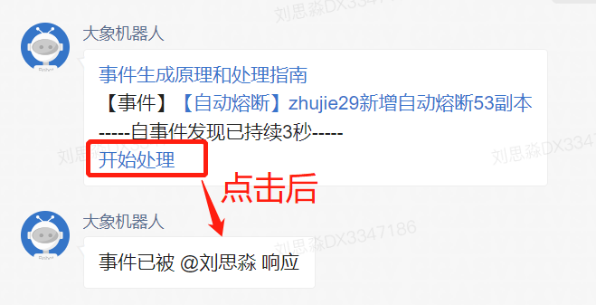
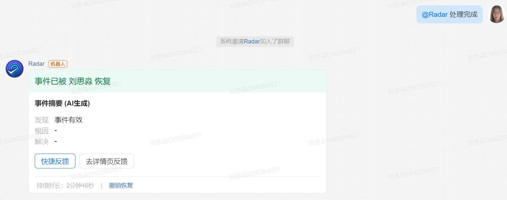
|
模块 |
说明 |
图例 |
|---|---|---|
|
配置入口 |
1.配置中心-离线任务列表-熔断配置 |
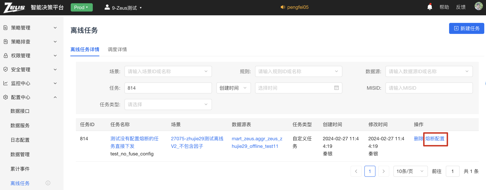 |
|
2.策略部署-场景配置列表-熔断相关 |
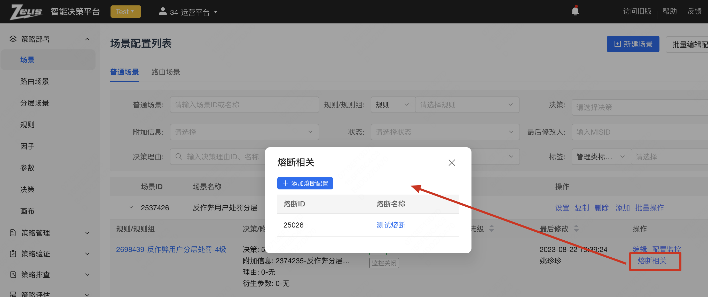 |
|
|
3.安全管理-规则熔断列表-新建熔断 |
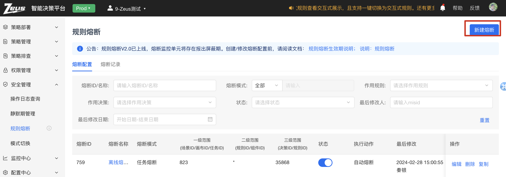 |
|
|
熔断配置 |
1.熔断模式选择任务熔断，熔断名称可编辑 2.作用范围：指定的任务、规则、决策才会参与计数，如果无需计算可使用排除机制
3.作用时间：可选择熔断监控的时间范围，系统将在设置的作用时间内检查数据，从而触发熔断； 时间类型包括：自由时间段（自由选择时间范围）与星期模式（设置每天的统一时间段，自由选择一周中的星期数）。 勾选排除节假日后，节假日不检查数据，例如设置了周六，同时勾选了排除节假日，则周六不检查数据 添加作用时间：以‘和’的逻辑关系增加作用时间，即可通过添加多条作用时间，获得一个作用时间的并集。 4.熔断规则：以且条件（添加子规则）和或条件（添加熔断规则）来组织。 单条熔断规则需要设置如下项：
5.熔断动作 默认为自动熔断，大象通知，无频次上限 通知人：可选择业务空间负责人、业务空间变更通知人、自定义。自定义：支持手动输入mis号，多个使用英文逗号隔开 告警负责人：雷达拉群包含了配置所有通知人，并非唯一负责人；告警负责人的配置主要是为了锁定升级时对应的X1 当前配置熔断的同学若希望收到熔断告警，别忘记在自定义中加上自己的mis号～ |
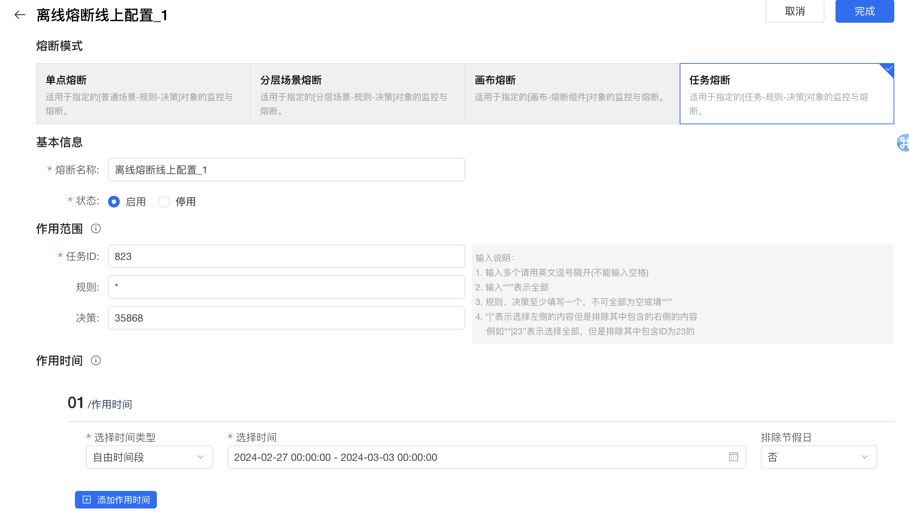 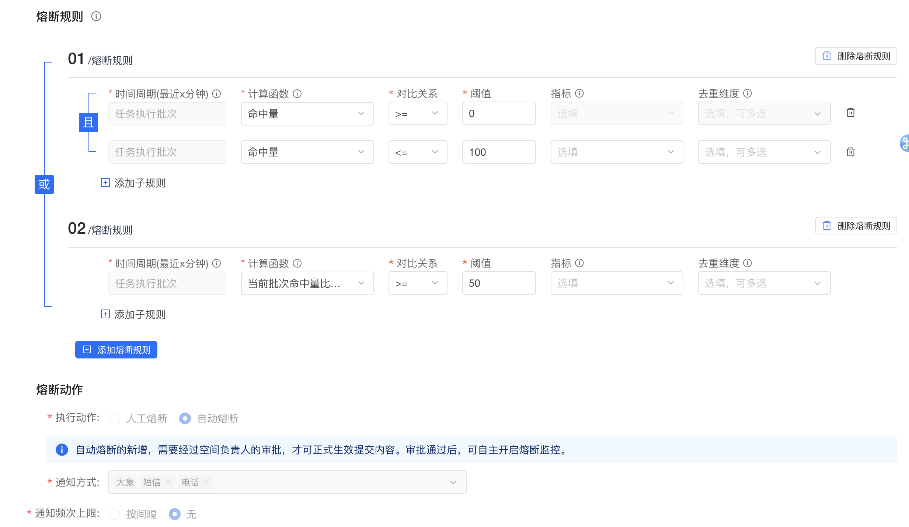 绝对值类函数
比对类函数
|
|
熔断配置列表 |
提交完成配置后，将会在熔断配置列表出现一条配置记录。 熔断模式：单点熔断 （场景-规则）/ 任务熔断（任务-规则-决策） 单点熔断的一二三级范围代表：场景-规则-决策 任务熔断的一二三级范围代表：任务-规则-决策 一个任务可以配置多个熔断，但是同期只有有一个配置是启用状态；记得在此处选择配置拨亮状态开关，开启熔断监控。 |
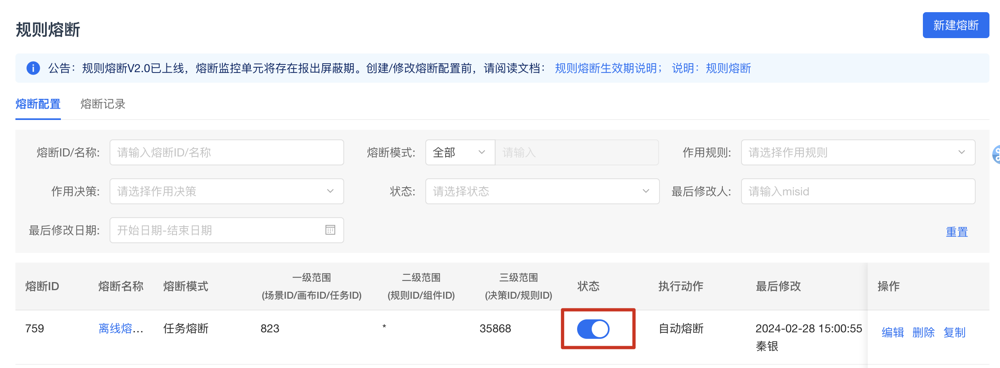 |
|
大象通知 |
如右图展示的是大象通知的内容 同一个批次触发的熔断，会合并到一起进行通知 点击【熔断名称】可打开zeus熔断配置预览页 点击【全部不处置】熔断符合预期，确认该数据不应该下发到下游 点击【全部恢复处置】熔断不符合预期，确认该数据应该下发到下游，点击后立即下发 点击【熔断记录】跳转到熔断记录列表页，可查看本批次的全部熔断记录 点击【任务详情】跳转离线任务详情页 熔断场景举例：如果一个熔断任务下配置了10条规则，同一执行批次中，只有2个规则达到了熔断阈值，则只熔断2个规则的数据，剩余8个规则的数据仍继续向下流转 如果只需要下发本批次部分数据，需前往熔断记录列表单独处理 |
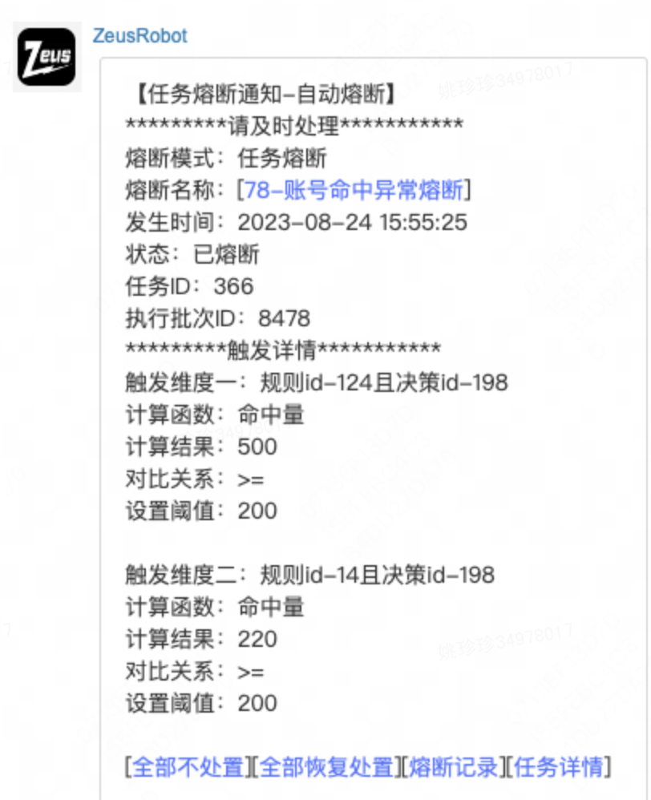 |
|
熔断记录处理 |
一个熔断ID代表一个执行批次，多条规则/决策触发，会产生多个重复的熔断ID 单独处理某一部分数据时，请注意查看二级范围（规则）和三级范围（决策） 恢复处置：数据发送到下游 不处理：数据不发送到下游 最近命中详情：跳转到dashboard，查询当前条件的详情数据，无需手动再次筛选 |
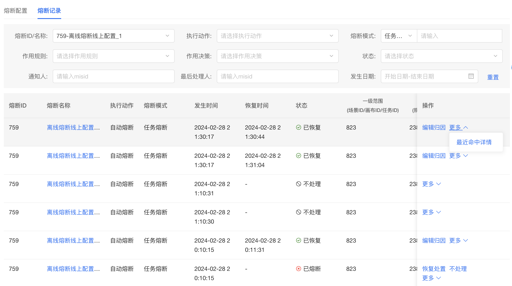 |
四、FAQ
|
问题 |
解答 |
|
|---|---|---|
|
当一条数据同时被多个规则命中，且规则中既包含正常规则也包含熔断规则，这种情况下如何处理？ |
熔断规则优先，如果命中熔断规则则拦截该数据 |
|
|
当一条数据同时被多个熔断规则命中，恢复处置的时候需要逐个点击，点击第二条规则恢复处置的时候，会不会造成数据重复下发？ |
系统会进行当前批次数据比对，已经下发过的数据不会进行再次下发 |
不可全部为空或填“*”：一个填*，另一个为空是可以的
无频次上限：一个批次只运行一次，只能通知一次
上个批次：不区分数据状态，即上一个批次的数据被熔断了，仍可参与比对计算